Strict quality control, demands for appearance inspection and production speed are constantly increasing. To meet these demands, stable measurements during movement for quality inspection without compromising manufacturing speed is required. Harnessing the benefits of the white light confocal principle, the ZW-7000 can provide stable measurements for different material types (glass, metal, plastic, etc.) and shapes (round, flat, uneven, etc).
Building Automation
Industrial Automation
Power Automation & Safety


Bangladesh Distributor
ZW-7000
Confocal Fiber Displacement Sensor

Reliable measurements for any material and surface types
about this Product Family
Related Contents
- Displacement / Measurement Sensors
- Features
- Lineup
- Specifications
- Dimensions
- Catalog
last update: June 20, 2016
Measure accurately
For all quality inspections, from parts to finished products
Inclined or curved surfaces
Omron's, unique, white light confocal Measurement value displacement sensor provides higher resolution measurements of angled or curved and shiny surfaces than traditional laser displacement sensors.
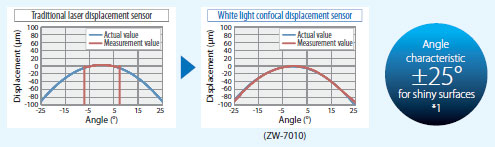
Different materials
With a traditional laser displacement sensors, it is required to re-tune after the sensor head direction is changed for a different material type.
Our white light confocal displacement sensor can measure a different material types while moving, without needing to re-tune the sensor nor changing the sensor head or installation direction.
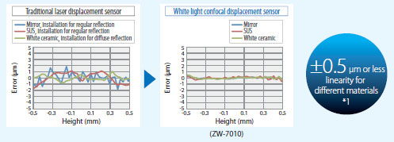
Flatness of coarse surfaces *2
Our white light confocal displacement sensors can provide accurate flatness measurement by tracing an object without being affected by its excessive reflection, the sensor head direction, nor the material hairline direction, which are difficult to track with a traditional laser displacement sensor.
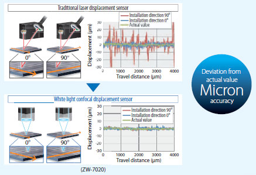
High-speed sampling for accurate shape measurements
Using traditional laser sensors, the measurement accuracy for a moving target can be achieved by increasing the averaging times, but downside is that this lowers the profile reproduction accuracy.The ZW-7000 acquires a sharp profile by a single sampling as fast as 20 μs without averaging, solving this issue.
*1. Typical value of the ZW-S7010 Sensor Head
*2. Objects with machining marks or hairline pattern
Note. All measurement graphs represent typical examples. Measurement may be affected by the shape or material of an
object to measure.
Before final installation, preliminary testing must be done to validate expected performance.
Measure more objects quickly
Efficient installation and motion solutions increase manufacturing speed
Robots and stages are used for assembly and inspection to increase productivity.
Manufacturers require measuring devices that are easy to integrate into small-sized machines and easy to move.
The compact and lightweight ZW-7000 sensor head eliminates issues of installation space and installation on moving parts.
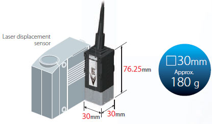
Increase throughput: Simultaneous measurements can be achieved using multiple sensor heads
Space restrictions prevent side-by-side installation of many traditional laser displacement sensors. The compact ZW-7000 sensor heads can be installed side by side to obtain multiple measurements at once, instead of measuring one at a time, thus reducing measurement time.
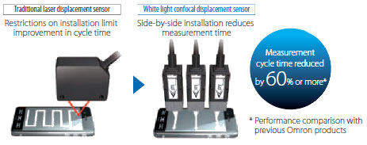
Increase speed: Reduce settling time
The light weight of the sensor head greatly reduces the waiting time for the oscillation to stop when power cylinders are used to move the sensor head('s) to the measurement position, resulting in faster measurements.
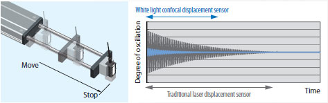
Save Time and Money: No need to rotate the sensor
A traditional laser displacement sensor measures the height of an object based on the position of the spot on the receiver. The machine requires an extra step to rotate the sensor according to the object shape or moving direction. Our white light confocal displacement sensor can measure from the same installation position while moving in any direction, with no restriction on installation direction.
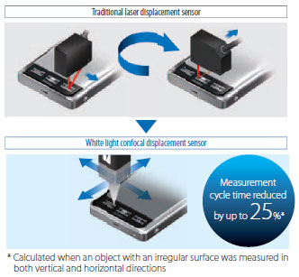
Flexible fiber cable for easy installation
The controller connects to the sensor head through a 3-mm-diameter flexible fiber cable. The cable has cleared a bending test consisting of 3,000,000 repetitions* for reliable application on moving parts. An extension fiber cable can be used to extend the distance to up to 7 m, and the cable can be installed in a cable carrier.
* Omron's bending test condition 3,000,000 bends to a 20-mm bending radius
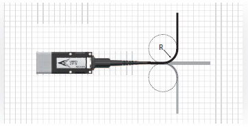
Set up quickly
Easy to design and tune
Quick installation of sensors is required to set up manufacturing equipment in a short time to meet the market needs. The ZW-7000, using the white light confocal principle, reduces significatly, the time required to implement measures that are necessary when using laser displacement sensors.
Easy device selection
There is no need to select different sensor heads for different objects, which saves the time required when purchasing and designing. This leads to reductions in set-up work and inventory costs.
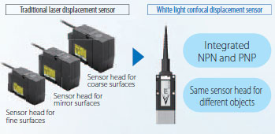
Reduced work for installation and tuning of sensor heads
The white light confocal principle allows stable measurements without fine tuning.
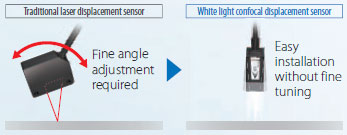
No rigidity measures required
The sensor head can be mounted on moving parts without need to take any rigidity measures, because the sensor head weighs only 180g. You save material costs and design time as there is no need to increase rigidity.
Reduced work - EMC measures and thermal design are not required
The sensor head design maintains stable operation in installations with electronic or magnetic noise.
Devices in close proximity and measurement values will not be affected by noise or heat from the sensor head.
No laser safety measures required
A white LED*, used as the light source instead of a laser, eliminates time to implement safety measures around the machine and the need for safe use training for workers.
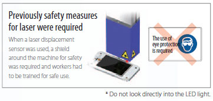
Efficient setting for multiple ZW-7000's
You can make settings for all of devices that are connected via EtherCAT with the Automation Software Sysmac Studio.
Even when you combine many sensors, you can copy the program data to effectively integrate several sensors or you can easily program the processing between the sensors.
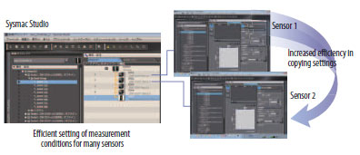
DLL
Quick integration into machine HMI
DLL files are provided to easily display ZW-7000 setting screens and measurement results on a Windows PC used as a machine HMI.
Provided DLL
· Settings and measurement conditions reference
· Acquiring measurement values
· Acquiring light received waveforms
· Logging control
* If you register as a member after purchasing the product, you can download DLL for free. Refer to the member registration sheet that is enclosed with the product for details.
last update: June 20, 2016